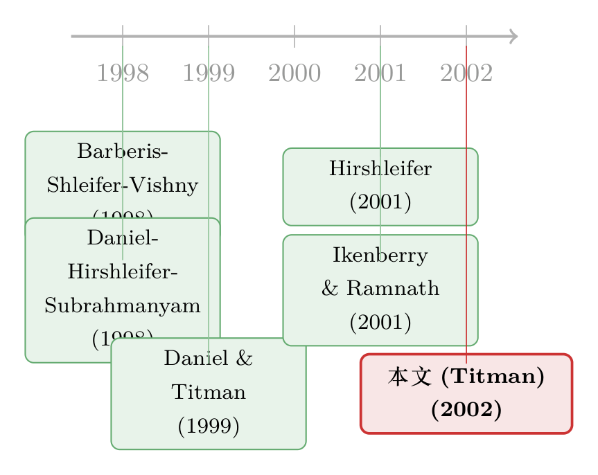

理性的人也会犯错，但理性的人不该一错十年
本文读的是 Titman (2002, Review of Financial Studies) —— 一篇对 Ikenberry & Ramnath (2001) 的「讨论稿」。Titman 的核心论点只有一句话却很扎人：要解释股价为什么会「初始地」对公司事件反应不足，我们并不需要心理学；真正解释不了、也最该被解释的，是为什么投资者学得这么慢——哪怕是拆股 (stock split) 这样最简单、最该被学会的事件，9.19% 的年度异常收益依然年复一年地摆在那里。
1 一个被讲滥了的故事，和它真正的破绽
过去十几年，金融学里有一类论文几乎成了流水线产品：找一个公司事件——盈利公告、股利变更、增发或回购、拆股——然后回测它之后的股价，发现价格反应不足 (underreaction)，于是宣布又抓到一个异象，再顺手挂上一个行为金融的标签。
标签往往是两个。一个是 Barberis, Shleifer, and Vishny (1998，下称 BSV) 的保守主义偏差 (conservatism bias)：人在更新信念时，倾向于给新信息打个折，于是反应不足。另一个是 Daniel, Hirshleifer, and Subrahmanyam (1998，下称 DHS) 的过度自信 (overconfidence)：投资者对自己挖来的信息过度自信、过度反应，相应地就对管理层「喂」给他们的信息反应不足。两套机制方向不同，但落点一样——都能「解释」上面那一串事件后的反应不足。
故事讲到这里，听上去严丝合缝。但 Titman 这篇讨论稿，从第一段就开始拆这个故事的台。
他先借 Hirshleifer (2001) 的话点了 BSV 一下：所谓保守主义偏差，其实只是「人会对某类信息反应不足」这件事的一个描述，而不是一个解释。你说人保守，所以反应不足；可「保守」本身不就是「反应不足」的同义反复吗？这等于什么都没说。
接着，一个更釜底抽薪的问题被提出来了。
2 不需要心理学，价格也会「算错」
Titman 的第一刀，砍向了整个文献的隐含前提：反应不足 = 非理性。
他说，未必。这些公司事件的信息含量，本身就极难定价。我们凭什么认定一个「正确」的即时反应应该是多少，从而判断市场反应「过头」或「不足」？
他用盈利公告 (earnings announcement) 把这个直觉讲得很透。一家公司今年盈利大涨，这意味着什么？两种完全相反的剧本：
- 负反馈：高盈利招来更多竞争者，把未来的利润摊薄。于是这次盈利变化主要是暂时的。
- 正反馈：盈利上升帮公司吸引到新客户、更好的员工，反过来推高未来盈利。于是这次变化是永久的，甚至会被放大。
要对盈利变化做出「正确」反应，投资者必须先对「这次变化有多少是暂时、多少是永久」有个判断。可我们凭什么指望投资者一开始就持有恰好正确的先验？
这里是全文的第一个转折，也是 Titman 区别于一众行为论文的地方：先验错了，不等于人疯了。心理学理论或许能告诉你偏差的方向（initial bias 是偏向反应不足还是过度反应），但「先验一开始就不准」这件事，根本不需要心理学来解释——它是任何一个面对困难推断问题的理性人都会有的状态。
杠杆变化 (leverage change) 那一节，逻辑完全一样，只是更复杂。Titman 列出，要理解股价该如何回应一次杠杆调整，你至少得想清楚三件事：
- 管理层改变杠杆的动机，如何受其私有信息影响；
- 杠杆变化又会反过来如何改变管理层的激励；
- 在发债/回购之前，管理层有没有在操纵盈利和现金流，好让自己以更有利的条件交易。
这么多缠在一起的问题，即便投资者完全理性，也别指望他们能在事件发生的当口就把股票准确定价。理性的世界里，初始的过度反应和反应不足是同样可能的。
到这里，Titman 已经把半个文献的解释力悄悄掏空了：你观察到的「初始反应不足」，可能根本不是偏差，而只是理性的人在难题面前随机犯的错加上缓慢的学习。
3 真正的破绽：理性的人，要多久才学得会？
但故事如果停在「初始误差不需要心理学」，那 Titman 不过是给市场有效性打了个补丁。真正关键的一步在于他接着追问的那句话——
如果投资者是理性学习的，我们就不该看到过度或反应不足长期持续 (persist)。
这是整篇讨论稿的轴心。理性学习意味着：你可以一开始错，但你会看着数据、看着后续兑现的现金流，把先验一点点修正过来。误差应当衰减，而不是年复一年地稳定存在。
那么，现实里投资者到底学得有多慢？Titman 给了几个相当克制、甚至自嘲的理由：
- 投资者过去拿不到数据。至少在不久之前，他们没有
CRSP、Compustat这类数据库，没法系统地检验自己当初的先验错在哪，于是把过时的先验抱得太久（Daniel and Titman (1999) 略有提及）。 - 杠杆这类事件，其后果本身就揭示得很慢。Titman 举了个很具体的数字游戏：假设股价本该对一次加杠杆上涨 30%，结果只涨了 10%，那剩下的 20% 可能要好几年才兑现——因为投资者要先看到杠杆压力有没有逼出管理层的硬决策（比如裁员），再看到这些决策有没有真的带来利润。事件与后果之间隔着好几年，连理性人也只能慢慢学。
然后他补了一记非常漂亮的反讽：学术界自己学得也不快。 收益异象其实相当直白，可金融经济学家——这群在分析数据上本该比从业者更有比较优势的人——花了很久才把它们记录下来；做公司金融的，也曾长期低估了财务杠杆的信息与激励效应。
「『理性』学者的学习速度，能不能拿来当投资者『应该』有多快的基准？」——Titman 把这个问句直接抛在纸面上。它的杀伤力在于：你没法一边说投资者非理性地学得慢，一边对自己学得慢视而不见。
4 为什么偏偏要盯着拆股
讲到这里，杠杆和盈利都被 Titman 归进了「难、且后果揭示慢，所以慢学情有可原」这一类。于是反转出现了：他要找一个反例，一个慢学说不通的事件——拆股。
为什么是拆股？借 Ikenberry & Ramnath (2001) 自己的话：拆股「是少数几个不直接影响未来现金流、也不改变公司风险特征的公司决策之一」。
这一句话的分量在于：分析一次拆股，你不需要去理顺任何经营层面的纠葛。拆股本质上就是管理层在发一个干净的信号——「我觉得我的股票被低估了」。投资者要做的，只是掂量管理层有多乐观、这份乐观有几分靠谱。这当然不简单，但比起评估一次杠杆变化，要干净得多。
正因为干净，拆股成了检验 DHS 过度自信假说最纯的试验场：投资者明知管理层是在有利信息下才拆股，却因为高估了自己信息的精度、低估了管理层信息的精度，而没能对这个信号做出充分反应。Titman 说，这个检验既干净、又大概率独立于其他反应不足的检验，因此它给出的强支持很值得重视——这应当把我们的信念往「某种过度自信」那边推一推，而不是往「纯随机犯错」那边推。
但拆股真正有意思的地方，是它作为慢学假说的反例：
- 拆股的含义本就容易理解；
- 公司不太会用拆股去暗示一个好几年都兑现不了的模糊信息——拆股的本意是吸引分析师注意，那信息多半是比较即时的；
- 而且据 Ikenberry & Ramnath (2001)，拆股发生得相当频繁，且其反应不足往往在一年之内就被纠正。
把这三条摆在一起，结论几乎是不可抗拒的：既然拆股这么常见、纠正得又这么快，投资者早该学会「股价倾向于对拆股反应不足」这件事，然后把这个 pattern 抢先交易掉，让异常收益消失。
可数据说：没有。
5 那个学不会的 9.19%
这才是 Titman 真正要钉在墙上的事实。
Ikenberry & Ramnath (2001) 报告的证据里，没有任何学习的迹象：他们划分的每一个两年期里，拆股公司的异常收益都是正的；而且在样本的最后两年，拆股公司在拆股后一年的平均异常收益高达 9.19%。
请注意这个数字出现的位置——它出现在样本的末尾，也就是「该学会的人早就有时间学会」的那一段。一个常见、简单、一年内就被纠正的 pattern，在十几年的样本走到尽头时，依然能给你年化 9% 上下的异常收益。用 Titman 的话说，这「尤其令人吃惊，因为此前已经有研究记录了拆股的反应不足」——也就是说，连论文都白纸黑字告诉大家了，市场还是没学会。
于是 Titman 在结论里把整篇讨论稿收束成一句很干净的判断：
我们在某些时段看到投资者对拆股这类事件过度或反应不足，并不奇怪；真正奇怪的，是在一个「学习本该极其简单」的事件上，反应不足竟然持续。
DHS 的过度自信理论能告诉你：像拆股这样的事件，初始偏差大概率偏向反应不足而非过度反应——这一步它做到了。但异象为什么能持续这么久，Titman 坦承他没见过一个有说服力的解释。他怀疑，行为金融的理论家们其实是在默认「学习被心理偏差抑制住了」，可这一点从来没有被显式地建模出来（脚注里他点到：DHS 讨论了投资者如何学习某个特定信号的精度，却没讨论投资者如何学习「信息事件本身」——比如公司披露的精度——这一更一般的问题）。
全文没有一行回归、没有一张表是 Titman 自己跑的。这是一篇纯粹的「讨论稿」(discussion)，它的全部火力来自把一个被讲滥的故事翻过来，指出文献真正欠下的那笔账：不是「人为什么会错」，而是「人为什么不改」。
6 文献脉络
把这条线索捋一捋，会发现 Titman 这篇短文站在一个很特别的位置上。
最上游，是两篇试图给「公司事件后反应不足」提供心理学微观基础的理论。BSV（Barberis, Shleifer, and Vishny, 1998）从实验心理学里的保守主义偏差出发，DHS（Daniel, Hirshleifer, and Subrahmanyam, 1998）则从过度自信出发——一个让你对新信息反应不足，一个让你对管理层信息反应不足，殊途同归地撑起了整片实证文献。（关于「能解释一切的理论，恰恰什么都证伪不了」这个更一般的担忧，可参见《能解释一切的理性，恰恰什么都证伪不了》。）

紧接着，Hirshleifer (2001) 的综述把保守主义偏差的「描述 vs. 解释」之分点破，给了 Titman 拆台的第一块砖。Daniel and Titman (1999) 则把「投资者拿不到数据、所以学得慢」这条线索先埋了下来。
然后是这篇讨论稿的「正主」——Ikenberry & Ramnath (2001)。它把镜头对准了拆股这个最干净的事件，本意是给反应不足再添一个证据。Titman 的贡献，恰恰是借它的刀：正因为拆股这么干净、这么频繁、纠正得这么快，它反而成了检验慢学假说的最佳反例，而那个学不会的 9.19% 就成了悬在所有行为模型头上的问号。
这条脉络也和后来「异象为何不被套利掉」的整条研究线接上了头（可对照《三个嫌疑人，一桩没有结案的悬案》与《新闻里那条「坏消息」，市场为什么总要慢半拍才信？》）。Titman 在 2002 年提出的问题——为什么学习这么慢——直到今天仍然是这条线上最硬的骨头。
7 评论与延伸（Q&A + 研究方向）
(a) 几个可能的疑问
Q：Titman 是在为市场有效性辩护，还是在攻击它？
都不是，这正是这篇文章的微妙之处。他既不站「反应不足证明非理性」，也不站「一切都是理性的」。他的真正立场是：初始误差可以用「理性人面对难题 + 随机犯错 + 慢学」来解释，无需心理学；但误差的持续——尤其在拆股上——是理性学习框架解释不了的，这一块才是行为金融真正欠的债。他把战场从「初始反应」挪到了「学习速度」。
Q：保守主义偏差和过度自信，到底哪个对？Titman 选了边吗？
在拆股这个干净检验上，他略微偏向 DHS 的过度自信：因为拆股是管理层提供的信号，过度自信模型预测投资者会低估它、从而反应不足，方向与证据一致；而且这个检验独立于其他检验，却仍给出强支持，所以应「把信念往过度自信那边推，远离纯随机犯错」。但他同时强调，无论哪个模型，都没有显式解释持续性。
Q：「不需要心理学就能解释初始反应不足」这个论点，会不会太强了？
它强，但有边界。Titman 说的是初始偏差的存在不需要心理学（先验不准是理性状态的常态），而偏差的方向可能仍需心理学。换句话说，他没有否定 BSV/DHS，而是把它们的解释范围压缩到了「方向」，并指出它们在「持续性」上其实是默认而非建模。
Q：那个 9.19% 真有那么致命吗？会不会只是风险补偿？
Titman 在脚注里就主动设了防线：拆股「不直接影响未来现金流或风险特征」，所以很难给它编一个可信的风险解释（不像加杠杆——加杠杆后公司确实可能更险、该要更高回报）。正因为拆股几乎排除了风险故事，那个出现在样本末端的 9.19% 才显得刺眼：它既不像风险补偿，又不像被学习消化掉的暂时偏差。
Q：为什么强调它出现在「样本的最后两年」？
因为这是慢学假说的判决点。如果是学习在起作用，异常收益应当随时间衰减；可它在样本末尾不降反高，等于说「给了十几年时间，市场反而没学会」。位置比数值更致命。
Q：这对公司债、信用市场这些领域有什么含义？
直接含义是：凡是「事件后漂移」类的发现，都得先过 Titman 这一关——区分「初始定价难」和「学习失败」。信用市场尤其值得警惕，因为信用事件（评级变动、违约、契约触发）的后果揭示得比拆股慢得多，按 Titman 的逻辑，那里的慢学「情有可原」，反而更难判断是偏差还是理性。要找「干净的反例」，得在信用市场里挑一个像拆股那样不改变基本面、纯信号的事件。
(b) 几个可能的研究问题与提案
1. 在信用市场复刻「拆股式」的干净检验。
【经济故事】Titman 的方法论精髓是：找一个不改变现金流与风险、只传递信号的事件，让风险解释和「后果揭示慢」两条退路都被堵死，从而把「慢学」单独逼出来。债券市场有没有这样的事件？比如纯技术性的债券拆分/重定面值、指数纳入与剔除、或不涉及基本面的评级机构方法学调整。
【可行性】中。TRACE 提供成交价、Mergent FISD 提供发行特征，数据可得；难点在于找到一个真正「干净」的事件——信用世界里几乎一切都牵动现金流，符合条件的事件稀少，识别要非常小心。
2. 直接测量「学习速度」，而不是只测「漂移存不存在」。 【经济故事】Titman 真正要的不是又一个异象，而是一条异常收益随日历时间衰减的曲线。把同一类事件按发生年份切片，看后续异常收益是否随「市场累计观察到的同类事件数」而下降——这才是对理性学习假说的直接检验。 【可行性】高。事件研究 + 滚动样本即可实现，拆股、增发、回购都有长样本。识别上的诚实之处在于：要把「学习」与「异象本身因结构变化而消失」区分开，需要一个不随时间变的基准事件做对照。
3. 把「学习被偏差抑制」显式建模。 【经济故事】这是 Titman 在结论里亲手留下的缺口：行为理论家默认心理偏差抑制了学习，却没人把它写进模型。一个自然的方向是构造投资者对「信息事件精度」本身也过度自信的学习模型——他们不仅对单个信号过度自信，还顽固地坚持一个错误的「公司披露不可信」先验，于是学不会。 【可行性】中。纯理论可做，DHS 框架可直接扩展（正如 Titman 脚注所指——DHS 学的是「特定信号的精度」，而非「信息事件一般的精度」）；难在让模型给出可被数据拒绝的预测，而不是又一个「能解释一切」的框架。
4. 用「数据可得性」做一次准自然实验。
【经济故事】Titman 推测投资者学得慢，部分是因为早年拿不到 CRSP/Compustat。那么数据库的普及、学术论文的公开、乃至异象被媒体报道，应当加速学习、压缩异常收益。这是一个可检验的因果命题。
【可行性】中。可以利用某个异象被某篇知名论文公开的时点，或数据/算力门槛下降的时点，做事件研究式的「公开前 vs. 公开后」对比（McLean & Pontiff 式的设计）。识别担忧在于这些时点往往与市场结构变化同期发生，需要安慰剂事件。
参考文献
- Barberis, N., A. Shleifer, and R. Vishny (1998). A Model of Investor Sentiment. Journal of Financial Economics 49, 307–343.
- Daniel, K., D. Hirshleifer, and A. Subrahmanyam (1998). Investor Psychology and Security Market Under- and Overreactions. Journal of Finance 53, 1839–1886.
- Daniel, K., and S. Titman (1999). Market Efficiency in an Irrational World. Financial Analysts Journal 55, 28–40.
- Hirshleifer, D. (2001). Investor Psychology and Asset Pricing. Journal of Finance 64, 1533–1597.
- Ikenberry, D., and S. Ramnath (2001). Underreaction to Self-Selected News Events: The Case of Stock Splits. Review of Financial Studies 15, 489–526.
- Titman, S. (2002). Discussion of "Underreaction to Self-Selected News Events". Review of Financial Studies 15(2), 527–531.